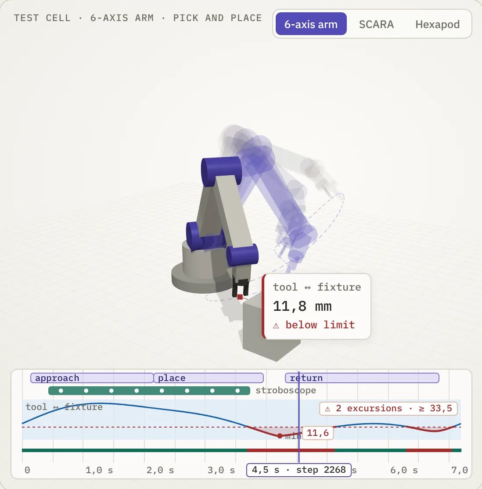

Twinhaven turns a SolidWorks assembly into a physics model you can run, record, measure and compare. See the overloaded joint, the clearance that closes, the motion that drifts — while it is still cheap to change.
Every core idea is built and proven in working prototypes. Now we are shaping them into one coherent product — early users shape what ships first.

Concept illustration of Twinhaven measurements, stroboscope and run timeline.
CAD, physics, electronics, control code, training data — each hand-off is manual, so every iteration costs days. Twinhaven closes the seams. Our metric is the cost of one iteration: from “moved a motor in CAD” to “saw the new graphs” in minutes, not days.
The tools you already use stay where they are. Twinhaven connects them into one project — one digital twin of the whole machine, with every change on record.
Swipe the scheme sideways →
A hexapod as an example: six legs, a head and an arm talk to the controller over buses through the body. Each wire becomes a signal in the simulation.
Today the twin already runs the legs, motors and your control code. Drawing the wiring as a schematic and simulating it is the next feature; the hardware adapter follows it on the roadmap.
Every run is recorded. The timeline takes you to any moment in one move — scrub, loop a fragment, lay a reference run next to today's. Three kinds of instruments read the record.
Freeze poses over time into one 3D picture: the path, the swing, the moment two parts come closest. Compare the motion of two design versions side by side.
Clearances, distances and angles become graphs over the whole run, with limits, a pass / fail verdict on every step, and the worst moment one click away.
Instrument stands for the whole machine: joint torques, motor currents and power, contact forces — gauges and limits that show which motor is overloaded and when, before it is ordered.
A robot is mechanics, electronics, code and data at once. Each piece below answers a question that is expensive to answer with metal.
Your assembly stays the single source of geometry. Parts become bodies with real masses; change a part in CAD and the twin follows — no remodelling by hand.
Built on MuJoCo, the physics engine trusted in robotics research. Contacts, motor torque and friction are computed, so a joint overload shows up before you order the motor.
A motor is a mechanical part and an electrical load at the same time. Linking the schematic to the mechanism checks drivers, currents and power before the board is made.
Cameras, lidars and thermal sensors need light, materials and weather, not just geometry. Blender renders what the robot's sensors would actually see — including fog and glare.
Control code is plain Python behind the schematic. It drives the twin today, so you debug logic without risking hardware; carrying the same logic to the real controller is on the roadmap.
Git is the version system every software team relies on. Twinhaven brings it to the entire machine: every design change and every run is kept, any result from months ago can be replayed, and a team works in parallel without overwriting each other.
Teaching a robot to see or walk takes thousands of simulated runs with varied light, weather and loads, and labels for every frame. That is real infrastructure — compute farms and pipelines — which Twinhaven runs in the cloud so you don't have to build it.
Set a clearance or an angle with limits and every step of a run gets pass or fail, with the worst moment one click away. Engineering decisions get a number behind them.
Design and debugging run on your machine, so your CAD model does not have to leave it. Heavy work — mass simulation, data generation, training — scales out to the cloud when you need it.
A working prototype — not mock-ups. This is what already runs.
Bring a SolidWorks assembly in: parts become bodies, joints are set from the assembly — mates suggest axes and limits. Out comes a standard MuJoCo model.
Every run is recorded on a timeline. Scrub back to any step, play fragments in a loop, keep the record across restarts.
Put a clearance or an angle between faces and bodies, set the limits, and get a pass / fail verdict on every step of the run — with the minimum and maximum one click away.
Freeze poses over time into one 3D picture: see the trajectory, the swing and the moment two parts come closest.
Keep a run in git as a reference and lay today's run next to it — what changed after your design edit is visible at a glance.
The project lives in your own git repository, the output is open MJCF. Your CAD model does not have to leave your machine.
Check reach, clearances and joint loads before ordering parts. The most expensive mistake is the one found after assembly.
One model shared by design, electronics and software — instead of three copies drifting apart.
Get a clean MuJoCo model of your own hardware straight from CAD — then use any open-source library you like.
The path from CAD to physics is free, open and local. The tools that make a whole product work — electronics, behaviour, rendering, data — come as Pro features.
Order, not dates. Early users decide what comes first.
Assembly import, timeline, measurements, stroboscope, references.
Autodesk Inventor, then Fusion, Onshape and STEP. Devices, wiring and behaviour code.
Photoreal frames, synthetic datasets, training in simulation and transfer to hardware.
We will email you once — when Twinhaven is ready to try. SolidWorks users can apply for the private beta.